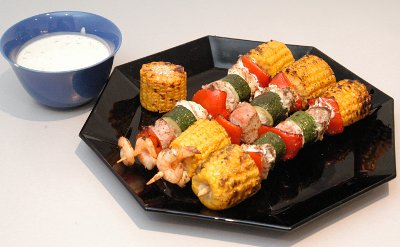

| Für 4 Personen: | |
| 1 | Maiskolben ca. 300 g |
| Salz | |
| 1 | rote Peperoni |
| 1 | kleine Zucchetti ca. 150g |
| 200 g | Thunfisch |
| 200 g | Seeteufel |
| 4 | Riesenkrevetten roh, geschält |
| 1 El | Fisch- Würzmischung |
| 3 El | Distelöl |
| Sauce | |
| 200 g | Blanc battu |
| 2 El | Ketchup |
| 1/2 | gelbe Peperoni |
| 2 Zweige | Stangensellerie |
| Limettensaft | |
| weisser Rum nach Belieben | |
| Salz, Pfeffer aus der Mühle | |
| 4 | Holzspiesse |
Zubereitungszeit: ca. 30 Minuten
Für die Sauce Blanc battu und Ketchup verrühren. Peperoni und Stangensellerie in kleinste Würfelchen schneiden. Gut mit der Sauce mischen. Mit Limettensaft, Rum, Salz und Pfeffer pikant würzen. Bis zum Servieren kalt stellen.
Den Maiskolben in kochendem Salzwasser 6 Minuten blanchieren. Herausnehmen, kalt abschrecken und gut abtropfen lassen. Den Kolben in 4 dicke Scheiben schneiden. Peperoni halbieren, entkernen und der Länge nach in 4 Streifen schneiden. Zucchetti in 4 dicke Scheiben und die Fischfilets in je 4 Medaillons schneiden. Abwechslungsweise Fisch, Gemüse und Riesenkrevetten auf Spiesse stecken. Die Gemüse dabei so aufspiessen, dass ihr Durchmesser nicht grösser ist als derjenige der übrigen Zutaten.
Das Fischgewürz mit dem Distelöl mischen und die Spiesse damit einpinseln. Auf dem Grill rundum auf jeder Seite 2-3 Minuten bei mittlerer Glut grillieren. Die Sauce separat dazu servieren.
Sie können die Spiesse bereits am Vortag marinieren und die Sauce ebenfalls fertig zubereiten. Evtl. die Spiesse in einer Aluschale grillieren, damit sie nicht kleben.
Pro Person ca. 44g Eiweiss, 22g Fett, 57g Kohlenhydrate, 2550 kJ, 610 kcal
Migros, Rezeptbroschüre
Hat ganz gut geschmeckt. Speziell die Sauce ist noch nett. Die Spiesse kann man aber genausogut im Coop kaufen, bringt also wenig die selber zu basteln. RE 12.8.2009